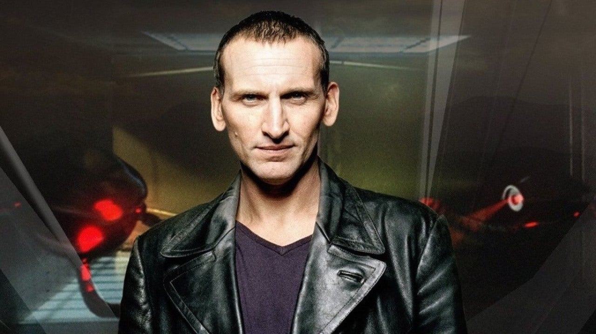
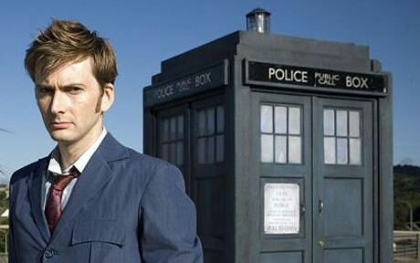
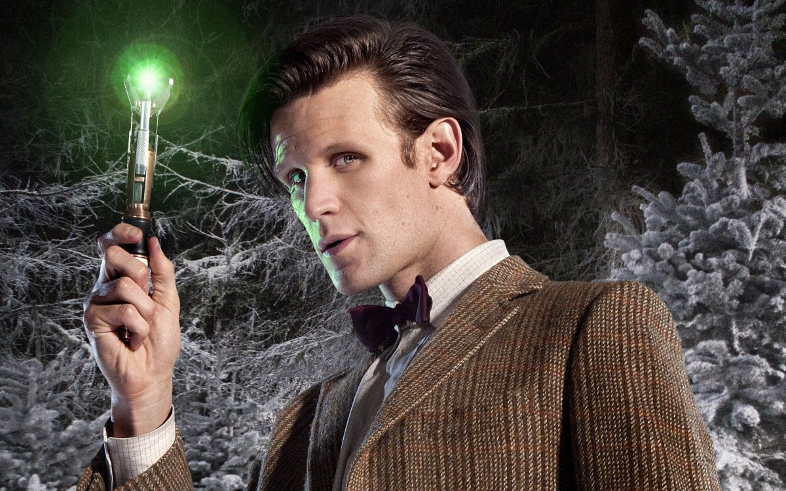
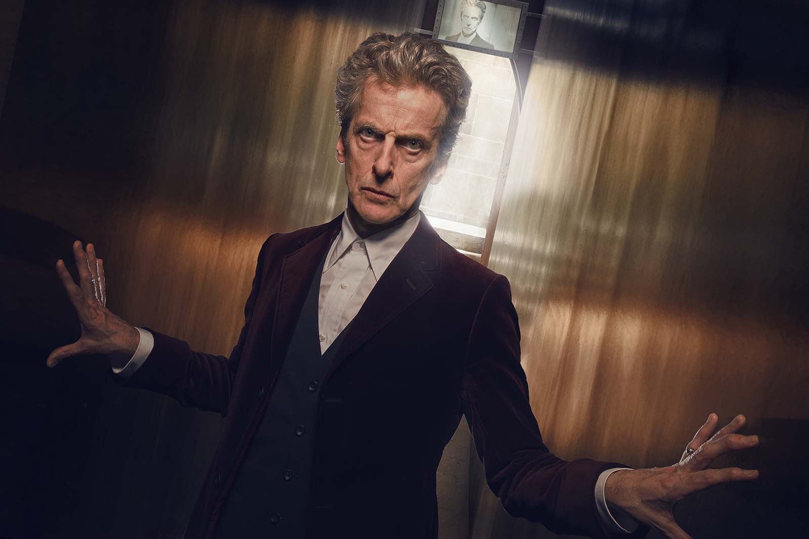

Guerra do Tempo (John Hurt):

O Doutor da Guerra, interpretado por John Hurt, foi introduzido em 2013 como uma encarnação até então desconhecida do personagem, situada entre o Oitavo e o Nono Doutor. Conhecido como "O Doutor que não foi chamado de Doutor", este período tumultuado aconteceu durante a devastadora Guerra do Tempo entre os Senhores do Tempo e os Daleks. O Doutor da Guerra enfrentou escolhas impossíveis e tomou medidas extremas para pôr fim ao conflito.
Nono Doutor (Christopher Eccleston):
Christopher Eccleston deu vida ao renascido Doutor em 2005, após um hiato de quase uma década. Seu Doutor era sombrio, marcado por cicatrizes do passado da Guerra do Tempo. A temporada focou na reconstrução da série, reintroduzindo os fãs a um universo mais moderno e emocionalmente carregado. Eccleston trouxe uma mistura de carisma e melancolia, deixando uma marca inesquecível.
Décimo Doutor (David Tennant):
David Tennant assumiu o papel em 2005 e logo se tornou um favorito dos fãs. Seu Doutor era enérgico, carismático e frequentemente cativava os outros com sua simpatia. As histórias abordaram desde dramas humanos até ameaças cósmicas, culminando em um adeus emocional. Tennant é amplamente considerado um dos Doutores mais amados e carismáticos da série.
Décima Primeira Doutora (Matt Smith):
Matt Smith estreou em 2010, trazendo uma energia peculiar e um estilo excêntrico ao Doutor. Sua era explorou mistérios temporais e contos de fadas, com Smith incorporando uma mistura única de sabedoria e infantilidade. A dinâmica entre o Doutor e sua companheira Amy Pond foi central para suas temporadas, tornando sua despedida emocionalmente impactante.
Décima Segunda Doutora (Peter Capaldi):
Peter Capaldi trouxe uma abordagem mais madura e introspectiva ao Doutor em 2013. Sua era explorou temas de identidade e moralidade, desafiando as expectativas sobre quem o Doutor é. Capaldi trouxe uma gravidade e complexidade à personagem, destacando as contradições inerentes ao viajante do tempo. Sua jornada culminou em uma despedida marcante e cheia de emoções.
Décima Terceira Doutora (Jodie Whittaker):

Jodie Whittaker assumiu o papel em 2017, marcando a primeira encarnação feminina do Doutor. Sua era trouxe um tom otimista e alegre, explorando temas de amizade e resolução pacífica de conflitos. Whittaker trouxe uma abordagem única à personagem, inspirando uma nova geração de fãs e redefinindo as expectativas em torno do papel do Doutor. Sua jornada continuou a desafiar as normas e expandir o alcance inclusivo da série.